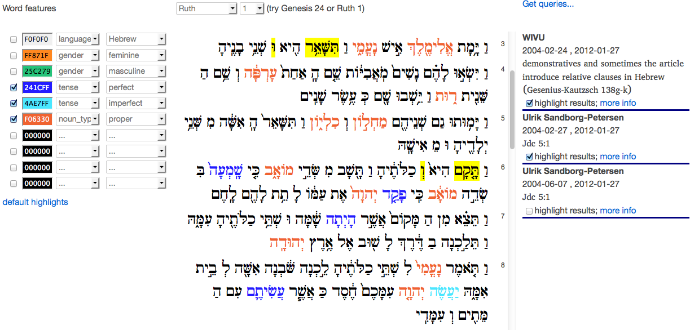
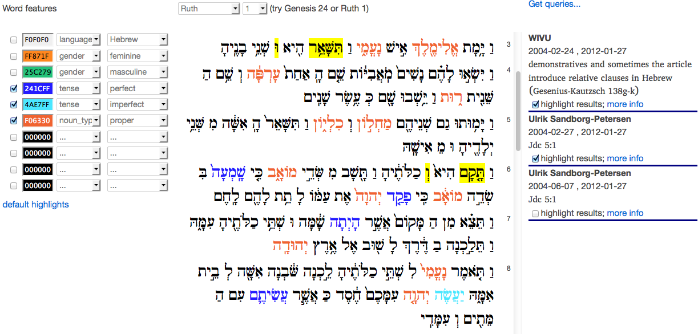
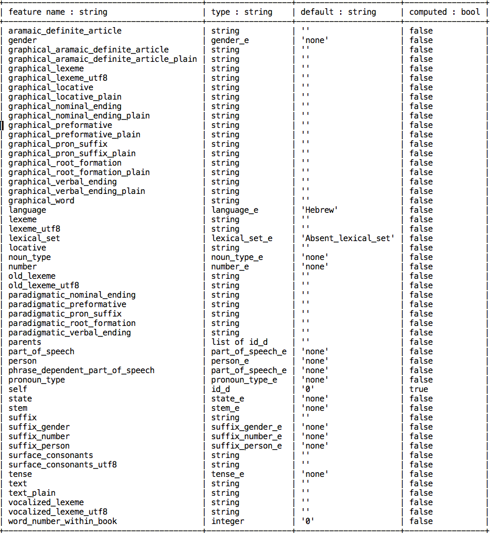
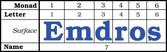
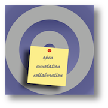
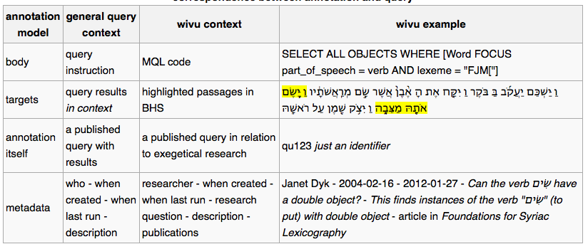
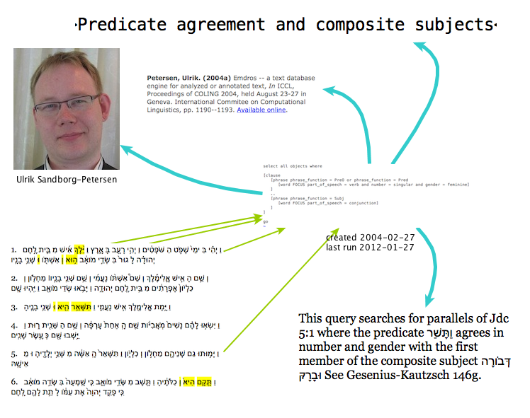
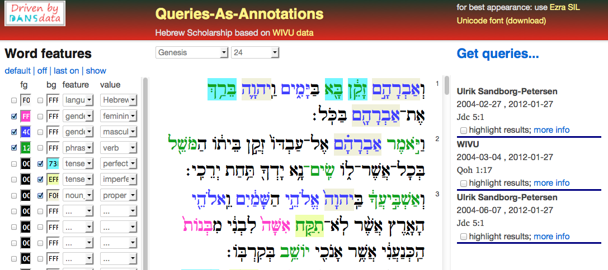

Queries As Annotations¶
 

Application¶
The application consists of two parts, a set of perl scripts for data conversion and a Web2Py web application for the end user.
Data conversion¶
A number of Perl scripts to extract the data from the Emdros WIVU database by means of MQL queries. After that the MQL output is transformed into several SQL files, to be bulk imported by an SQL database.
There is a database, wivu for the WIVU textual data, and there is a database, oannot, for the annotation data, which are feature data, also coming from the WIVU database, and query data, imported from a set of example queries.
History¶
Author: Dirk Roorda, DANS.
This is the motivation, history and explanation of the Queries-Features-As-Annotations (demo)-application.
The underlying idea has been presented first at workshop Biblical Scholarship and Humanities Computing workshop on 2012-02-06/10. See also Lorentz Workshop. Currently the idea is being worked out in a CLARIN-NL project called SHEBANQ.
Hopefully SHEBANQ will spawn a hub for doing qualitative and quantitative analysis on LAF resources. See :ref:`LAF Fabric`.
I am have also been working on a idea for dealing with versions of all kinds: :ref:`Portable Annotations` or: annotations that remain usable across variants of resources.
Another example of the versatility of annotations as a carrier for the results of scholarship is :ref:`Topics As Annotations`, for which I am currently developing the Topics-As-Annotations (demo)-application.
Queries and their results are meaningful objects in the scholarly record, but how do we preserve them? We explore the idea to store queries on a corpus as annotations to that corpus.
Contributors:
- Henk Harmsen presenter of On the Origin of Scriptures, highlighting the care that is needed to preserve the texts and the research on them through the digital ages.
- Dirk Roorda presenter of Datastructures for origins, interpretation and tradition of text, also known as provenance, analysis and sharing (presentation available at the workshop site.
These colleagues of mine have assisted in the development of the demo
The Case¶
Linguistic Text Database¶
The WIVU group in Amsterdam, led by Eep Talstra has crafted a linguistic database of the Hebrew Old Testament. It is the fruit of decades of work, still continuing.
The acronym WIVU is not officially known on the website of the Free University Amsterdam. But there is a current NWO project Data and Tradition. The Hebrew Bible as a linguistic corpus and as a literary composition, initiated by Eep Talstra, that continues the WIVU work. Oliver Glanz is associated with it.
The text with all its features is stored in a special database (EMDROS). This database supports a pragmatic subset of the query language QL, defined in [Doedens]. The subset is called MQL. EMDROS is a front-end on more conventional database technologies such as MySQL or SQLite.
Scholars use MQL queries to shed light on exegetical questions. It is possible to define quite sophisticated queries into text corpora, of which the Hebrew Bible is an example. These queries do not only mine the surface forms of the texts, but also the annotated features that have been added over time. Depending on the amount and detail of these features, the queries will yield a treasure of information, some of which will be fed into the text database in subsequent stages.

The WIVU database is included and integrated in Logos/SESB Bible study software.
SESB 3.0 also contains the Biblia Hebraica Stuttgartensia with text critical apparatus and linguistic WIVU database, plus the Biblia Hebraica Stuttgartensia: Workgroep Informatica Constituency Tree Analysis. The new WIVU database allow for a precise overview on how the single textual elements of a specific text passage are analyzed and hierarchically organized.
The WIVU database is not the only linguistically marked up database of the Hebrew Bible. To get a feel for how these databases are used, have a look at the Logos users’ forum.
While this approach is beneficial for analysis and interpretation, it poses challenges for sharing and tradition.
All these people that have bought their individual copies of the WIVU database, running their queries locally, what means for sharing their research do they have? Of course they can publish their results in scholarly articles, but how is one to get an overview of all the research that is going on?
Here we propose an approach where queries and their results are being visualised together with the canonical sources around which they have been constructed.
A first attempt by DANS for sharing the research done with the WIVU database using the EMDROS tool has resulted in a website hosted by DANS where interested people can experiment with MQL queries on a 2008 version of the WIVU database.
After that the WIVU database has been listed in an inventory of language resources by the European CLARIN project.
Open Annotation¶
Annotation is a pervasive research activity. It is the vehicle to enrich the data of science by the insights of experts. Annotations are often locked into the sytems that hold the data or the tools by which scientists perform their analysis. They might be using programs on their own personal computers, or work in an institutional environment around a database for which no public access has been set up. Where it is not possible to address the things that annotations are about, the annotations themselves cannot be shared in ways that do justice to their potential.
It is very fitting in our network age that there is an initiative to liberate annotations from their specialised contexts and share them freely on the web: the Open Annotation Collaboration (OAC).
The first task is to identify a general, abstract model to which all annotations conform. The OAC model talks about annotations as entities having one body and one or more targets. The body is what you say about the targets.
The second task is to employ web-technology to underpins that model. OpenAnnotation has chosen the emerging Linked Data framework (see also Linked Data Book) for giving web-reality to its abstract concepts of bodies, targets and what connects them together.
Additional information about an annotation can be supplied as well. This is metadata about an annotation. This is the place to tell who made the annotation, when, and why, in what context, referring to which publications, etc.
Metadata is not modeled by the OpenAnnotation Collaboration. It is attached to the annotation by usual Linked Data means.
Taking all this togehter means that: here we have a framework that is working on the most pervasive technology of the information age, with a nearly unlimited capacity of making connections where there used to be no connections. It is suited to express the results of much hard research work. Last but not least it has the promise of new discovery by new ways of visualising patterns.
The Idea¶
Queries as Annotations¶
So much for annotations. What about queries into databases? Where annotations are rather passive, static comments, queries are active, dynamic forays into landscapes of data. What do the benefits of OpenAnnotation have to do with queries? If we want to preserve research output, we should preserve queries!
Yes, and here is how. First we must realise how difficult it is to preserve queries in their dynamic form. Several problems stand in our way:
- real-life databases are changing all the time. Running a query now will give different results from running a query tomorrow.
- software itself is difficult to preserve. The whole stack of <operating system - database management system - query language - publishing manager> is changing at such a rate, that if you do nothing special, the query that runs fine now, will not run at all in two years time.
Yet, when a scholar is grounding the conclusions of a journal article on the results of a query, it is important that there is some permanent record of the exact results. It matters less that the query cannot repeated exactly. It matters more that when the query is repeated, the differences with previous runs can be spotted.
Preserving the record of a query (and its results) is a whole lot different from preserving the capability of running that query with exactly the same results for the indefinite future. This record is not dynamic but static, not active but passive. So it makes sense to turn to OpenAnnotaion again and see what they can do for query records.
The central idea is:
a query on a text database can be preserved as an annotation to all its result occurrences in that database.
In the list below the exact correspondence between the annotation concept and the query(record) concept is shown, together with the WIVU database as an example.
Benefits of Queries-As-Annotations¶
Is it worthwhile to preserve queries as annotations? What can you do with it? Well, the best way to find out is to start building it and see what happens.
We (Eko and Dirk) have built a demo web application that shows the surface text of the WIVU database in the left column, and the relevant queries in the right column. A query is relevant if it has results occurring in the text of the left column. You can click on a query to highlight the actual results on the left.
When DANS built the DANS-WIVU website back in 2008, we used 22 real-life example queries. Now in 2012 we use a new version of the database, called BHS3, and we have adapted those 22 queries to the new datamodel. Yes, the data model has changed, most of the queries did not run out of the box.
Users of bible study software are familiar with searching (=querying). But it is just one direction of information that is usually supported: given the query, you get the results. What is more difficult to obtain, is: given text passages, what are the queries of which they are results?
This latter direction makes only sense if there is a set of queries that have a significant research value. Not every search command or query is equally valuable. It depends on the underlying research question, if there is one, the identity of the person/project that crafted the query, and associated publications. Queries-As-Annotations have the potential to make this network visible. And the source texts themselves are part of this network and provide access to it.
The present demo application lets scholars stumble upon each other’s research questions by showing the published queries, including metadata, next to their results.
If there is a significant amount of published queries, an interesting network of researchers, research questions, query instructions and text passages will be revealed.
Anchored Sources¶
The query-as-annotation idea is most easily implemented and most effective if the sources against which the queries are executed, are stable.
If they are not stable, the idea still works if the atomic elements in the sources are addressable by stable addresses.
If the addresses are not stable, the idea can still be put to work if we can translate addresses from one version to another.
This requirement can be summarised by saying that the sources should be anchored:
all atomic elements of the sources should have well-defined addresses.
In the WIVU case, the words are called monads and they have a sequence number in the whole corpus. We have used these sequence numbers as our anchors in for our demo application.
There are more versions of the Hebrew texts that collectively comprise the Old Testament. If we do not want to tie our queries to a specific version, several approaches could be followed. We could make databases for the individual versions, assign local monad numbers to the words, and then compute a mapping between the monad numbers in such a way that the numbers of corresponding words are mapped.
A radically other approach is to integrate all versions in a super-version. Each word will carry an extra feature, called version-membership, which specifies the versions to which the word belongs. If the addresses of the words are assigned in such a way that it is possible to add new words between existing words, than we can keep anchors stable even if new versions are discovered and added.
The query-as-annotation approach is suited also to this super version. Even if the assignment of words to versions is not stable, and follows the successive waves of scholarship, the words themselves have fixed addresses, and can be targeted by query records.
Independence of Analytical Tools¶
In order to show the query record, it is not necessary to preserve the analytical machinery in working order.
A positive consequence is that there is no brake on the continuous evolution of analysis tools. There is no legacy to be carried around. When showing query results, it is not needed to show all the analytical features carried by the words in the database. That makes it easier to build web interfaces that are optimised for sharing research and discovering larger patterns.
Of course, it remains important to preserve the data of the analytical machinery, i.e. all the features and their organisation by the database. But we do not have to preserve them in a way that we can run the analytical tools on them. It is sufficient that the data is transparent en well-documented.
Transparent means: open to inspection, not hidden behind opaque binary formats. The tools that see through these binary formats may not exist anymore somewhere in the future.
Well-documented means that it will be clear to future users of the data what the features mean, what the quality of the value assignments are, and for what purposes the data have been collected and used.
Solution of Digital Preservation¶
Considering the field of biblical scholarship, the nature of the analysis that takes place, the kind of research results that are communicated, it can be concluded that we can do a good job in digital preservation of research data if:
- we use and preserve anchored sources
- we preserve static analytical data in trusted digital repositories
- build and maintain an Linked Data web of Queries-As -Annotations
It is not perfect, in that we will not be able to completely reproduce every detail of past research. But it is still good value to be able to see a well-documented, well connected track record of research questions and answers.
The Work¶
Components¶

Annotation Database¶
For maximum interoperability, the Open Annotations should be stored in an RDF triple store and published on the Web.
Then other researchers can discover the queries, view their metadata properties, follow their results. Via the property researcher they can find the one who has crafted the query, and then find other queries by the same person. Through the property research-question they can observe the research programme behind the query, and find useful keywords to search for related material.
Nevertheless, this demo stores the queries in a local database. This might be a typical situation. In order to use the annotations in a rendering application, it might be useful to import them from a triple store into a local database.
Conversely, when queries are locally added, they must be exported from the local database to a global triple store.
Although we store the queries in a local database, they are modeled as annotations with bodies, targets and separate metadata. It is conceivable that quite different annotations (not derived from queries) on the same source (Hebrew Bible) are added to the store. This will in no way break the application.
Source Database¶
We work with a version of the Hebrew Bible that comes from the WIVU group. The version is called BHS3.
This is a feature-rich source, in the literal sense: words and clusters of words are objects, and objects have many features.
We compiled a source text in XML by extracting the text feature from the words, the verse-, chapter- and book- objects, and the monad numbers (i.e. the sequence numbers of the individual words in the complete text).
These monad numbers are our anchors. They will be used to identify the occurrences of the query results.
Here it is clearly visible that we do almost nothing with the analytical machinery. It’s only the surface text and the anchors that we need.
That being said, it is not that difficult to also export some of the features and show them in the interface, possibly on demand. If we take that too far, the web interface will be a competitor of the commercial bible study software in which the WIVU is packaged.
Whether that is a good thing or a bad thing depends on your perspective. From the perspective of DANS , as an enabler of data re-usage, it is definitely a good thing!
Rendering Application¶
The web-application that renders the sources shows individual chapters of individual books of the Hebrew Bible.
The browser-screen is divided into a left, middle and a right column.
The middle column contains selection controls for books and chapters, and below that displays the selected chapter. The text is rendered in Hebrew characters, from right to left. This is the primary data, the source, and it is pulled out of a mysql database, called wivu.
The left and right columns contain annotations, which are pulled out of a different database, called oannot. This database has tables for bodies, targets and metadatarecords for annotations. It has a table for annotations as well. An annotation record consists of an identifier only; the body and its targets are connected to it by means of link tables.
The left column contains highlight controls for features. Features are annotations that have bodies of the form key = value, and they can be distinguished by other annotations through a field called type in the metadata record. The targets of a feature annotation are all the words that carry that feature-value.
The right column contains the queries that have results in the selected chapter. The results can be highlighted per query, and more information about the query can be shown on demand.
Implementation notes¶
The current version is built as a web application inside a web2py framework.
In a previous version the rendering of the source texts in the middle column has been done with the Java-Hibernate framework: the database objects are made accessible to Java and from there to the webserver. However, in a second version we changed to something much more light-weight. The program does not make very extensive use of the data, so it is not really worthwhile to introduce a data abstraction layer. More over, this layer makes the performance of the application as a whole less perspicuous: there is a heavy overhead at first, and a smoother behaviour later on. We needed more control both with respect to functionality and to performance.
The rendering of the queries in the right hand column is done in a different way. We needed more intricate queries to select the relevant items. There is also another reason not to knit left and right too closely together. The annotations are to come from a different world, on demand, as a kind of stand-off mark-up. They are an overlay over the sources themselves. The evolution of rendering the sources should not be tethered to the evolution of rendering the annotations.
A short remark about the highlighting functionality. This is realised by client side javascript. The query that fetches the query-cum-results gathers enough information to know which words should be highlighted per query. This information is written out to javascript associative arrays inside a <script> tag in the body of the html that is sent to the browser. For the features in the left column it works in the same way, essentially.
The success of the web2py framework appears from the following observation: the amount of our own coding on top of the framework is embarrassingly small. Here is an overview of the number of lines we coded in each formalism.
| language | web app | data preparations |
|---|---|---|
| sql | 90 | 80 |
| python | 250 | x |
| perl | x | 650 |
| javascript | 300 | x |
| html | 50 | x |
| css | 60 | x |
| shell-script | x | 280 |
Data Statistics¶
Here is an overview of how many source data and annotations this application deals with.
| quantity | amount | extra info |
|---|---|---|
| source texts | 90 | 80 |
| all annotations | 250 | x |
| all targets | x | 650 |
| query annotations | 300 | x |
| query targets | 50 | x |
| feature annotations | 60 | x |
| feature targets | x | 280 |
Functionality¶
Basic Features (implemented)¶
The source text is rendered (per individual chapter) with results of selected queries highlighted.
This shows the beginning of the experience that you can navigate over a web of research questions, researchers, query instructions, query results and source texts.
The most critical part is to encounter results in source texts and navigate to the relevant queries.
Extensions (not implemented)¶
- More features of the source text * selective highlighting of part-of-speech features of words * mark clauses and phrases by brackets
- More navigational aids * different colors for different queries * better representation of the structure of a query result
- Better display of metadata * show full details of a query on demand (e.g. on hover)
- Query management * Make a straightforward list interface on the metadata records of the queries * Make all columns sortable * Allow editing of fields * Allow adding new queries
Adding queries (not implemented)¶
There are two ways of adding queries: as a generic annotation or as a verified query.
Generic Annotation
Adding as a generic annotation means that the user supplies an annotation body instruction and specifies the targets in the source text and provides metadata, and there will be no checking whatsoever. The body does not need to be a query instruction, and the targets do not have to be the result of any query. It is just a free annotation, that can say anything about anything.
Of course, it is perfectly possible that a user runs a query on his system at home, collects the results, and puts everything into an annotation. As long as the anchors for the words (the monad numbers) in his own version of the sources correspond exactly with the anchors in the server version of the sources, all is well.
Verified Query
Adding as a verified query means that the annotation to be added really is interpreted as a query. The user may or may not send his own results along. In any case, the query will be run against the database of the server, and those results will be stored when the query is saved as an annotation. If the results do not agree with the results specified on beforehand by the user, he will get a warning.
Linked Data Interoperability¶
Having the annotations in a local database falls short of the goal of sharing the query results freely on the web. So that will be the next thing to do: set up a triple store and export/import mechanisms between the triple store and the local database. The triple store can the be queried by quite other means: SPARQL queries. The annotations become discoverable, and it will be possible to collect annotations from various sources.
Timeline¶
Below are the most significant events in the history and future (?) of this demo, listed in reversed temporal order.
2013-05-02 Workshop Electronic Tools in Biblical Hebrew Research and Teaching¶
A workshop where the methods of Biblical research are demonstrated, a preview on new ways of sharing the results of those results is given. Eep Talstra, the retiring professor gives a concrete illustration of sorting, searching and simulation on the basis of the Hebrew Text database he and his group have developed. After the workshop his successor, Wido van Peursen takes over with his inaugural lecture “Grip op Grillige Gegevens” (getting to grip with capricious/raw data).
2013-05-01 SHEBANQ project starts¶
Today we had a kick-off of the CLARIN-NL project that aims to implement the idea of queries-as-annotations into a production system, running at DANS which acts as a CLARIN centre here.
2012-12-18 SHEBANQ project granted by CLARIN-NL¶
System for HEBrew text: ANnotations for Queries and markup is a 100 k€ project proposal for call 4 of the Dutch section of the European project CLARIN. With this project the Old Testament group at the VU University Amsterdam, lead by Wido van Peursen, and DANS will represent the renowned WIVU database in the Linguistic Annotation Format. It will then be possible to save meaningful queries on that database as (open) annotations. We will build a query saver as a web application. A project like this is important to get digital biblical scholarship out of the local computer systems into the clouds.
2012-10-29 Paper presented at the ASIST conference¶
Here are the slides. And here is the article in the proceedings (warning: this is a slow link, the result is a 6MB image). Much more convenient is our final submission, which is a searchable pdf.
2012-07-25 Paper accepted for the ASIST conference¶
With Charles van den Heuvel I submitted a paper ” Annotation as a New Paradigm in Research Archiving ” where we advertise new practices for archives in order to really support modern research. The showcases are the CKCC project and the Hebrew database. The paper has been accepted and will be presented on 29 October 2012 in Baltimore.
2012-03-26 Towards portable annotations¶
Version 3.0: Preparation for portable annotations. The targets in the texts can be addressed by the word sequence number in the WIVU text. Now the address consists of book-chapter-verse + local word sequence number, i.e. the sequence number in the verse. We prepared the Westminster version of the Hebrew Bible with the aim of displaying it together with the WIVU version, in such a way that words common to both versions have common addresses.
2012-03-19/20 Interedition Symposium at Huygens ING¶
(abstract accepted) (to present and enhanced demo compared to the one presented at Lorentz Workshop)
2012-03-14 Features as Annotations¶
Version 2.1: After a recent, internal bootcamp we have brought new features to the demo: features as annotations. The user can select a number features-value pairs and highlight them in a color of his choice.
2012-03-07 Ported to web2py¶
The demo has been ported to the convenient, python-based web2py framework. Ready to receive more functionality.
2012-02-06/10 Lorentz workshop¶
(encouragement to work further on ways of sharing research, see Lorentz Workshop, queries-as-annotations still stand, but the idea must be worked out more compellingly).
2012-01-30/02-03 DANS mini bootcamp: Eko and Dirk¶
Building a demo for the sole purpose of realising the query-as-annotation idea in a real research context. It is not optimised for performance, it has no security measures whatsoever, and the user interface is bleak. We await feedback and suggestions from the participants of the Lorentz workshop. Depending on that, we hope to improve and add and present an improved version on a following workshop. The demo and its documentation are hosted on a cloud server , hired by DANS.
2012-01-11/14 Interedition Bootcamp¶
Inspiration as to the content and the implementation of the query-as-annotation idea. Dirk participated in a Linked Data subgroup. We built services to automatically annotate place names in Arabic, Greek and English texts. This we did by looking up each and every word in the Geonames database. The hits were translated into Open Annotations.